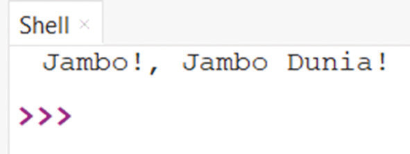

for Secondary Schools
Writing and running a simple Python program
Once Python is installed and an IDE is
set up, you can start writing your first program. A simple Python program
consists of a sequence of instructions that
the computer executes.
Step 1: Write your first Python program
(a) In Thonny IDE, go to File → New


to create a new file.

(b) Type the following Python code:


(c) print(“Jambo!, Jambo Dunia!”)


(d) Save the file as jambo.py.


Step 2: Run the Python program


(a) Click the Run button (►) or press


F5 to execute the program.

(b) You should see the output, as


shown in Figure 5.3:

Output:

Figure 5.3: A program output of jambo.py
Alternative to IDE: Running Python
code using IDLE
When setting up Python, ensure that you
download IDLE (Integrated Development
and Learning Environment). It should be
included with Python during installation,
but it is important to double-check during the setup process. IDLE is the environment you will use for your
Python projects. If you want to avoid
searching for another environment or
make the process as straightforward as
possible, especially as a beginner, IDLE is the ideal choice.
The key features of using IDLE for
Python programming include:
(i) An integrated debugger with
persistent breakpoints, call stack
visibility, and stepping functionality
to simplify debugging.
(ii) A Python shell that highlights syntax for better readability.
(iii) A multi-window text editor that
assists with indentation, syntax
highlighting, and code completion.
You can open Python’s IDLE (Integrated
Development and Learning Environment)
to run your Python programs. Here’s how
you can open IDLE and run a Python file
(for example, jambo.py) using the steps below:
Step1: Open IDLE:
(a) On Windows, click on the “Start” menu (or use the “Search bar”).
(b) In the search field, type “IDLE” and press “Enter” to open IDLE
(Python’s default IDE).
Step2: Open the Python File:
(a) Once IDLE is open, go to the
“File” menu in the top-left corner.
(b) Select “Open” and navigate to
the location where your Python
file is saved (such as, Desktop →
Python).